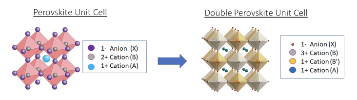
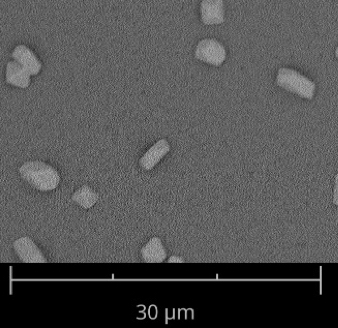
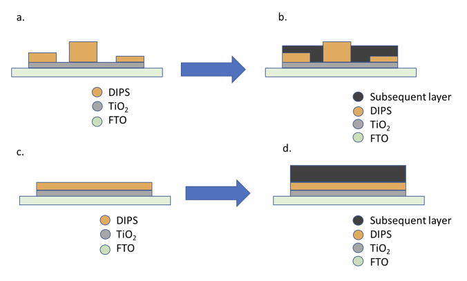
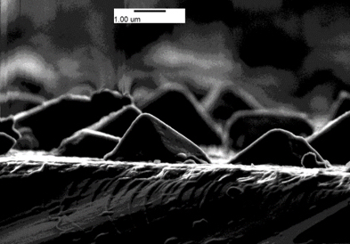
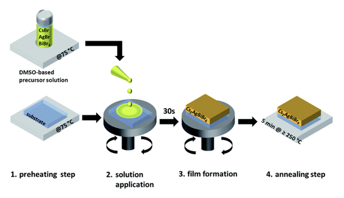
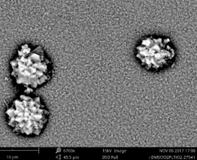
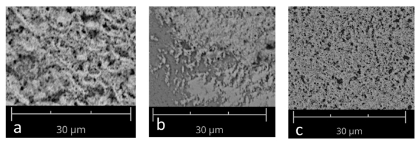
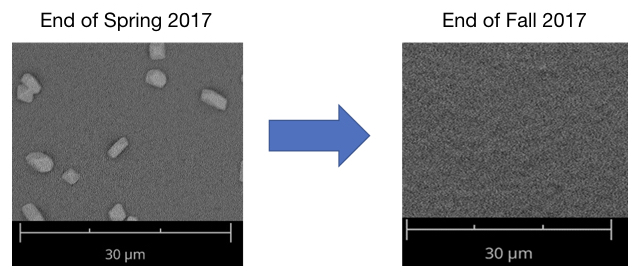

Developing Thin Films of Double-Inorganic Perovskite Salts for Use in Solar Cells
Writer: Devan Solanki
Date: Fall 2017
Citation: Solanki, D., Laursen, A., & Dismukes, C. (2017). Developing Thin Films of Double-Inorganic Perovskite Salts for Use in Solar Cells. Rutgers Research Review, 2(2).
My name is Devan Solanki and I am a member of the Rutgers Honors College, Class of 2019. I am double majoring in Chemical Engineering and Chemistry and am interested in renewable energy. After graduation, I plan to obtain an advanced degree in chemistry. Ultimately, I hope to stay in the renewable energy field and break into the public policy sector to work on legislature that encourages sustainable energy practices. I started researching in the Fall 2016 semester and am planning on continuing my work in this group until I graduate.
My research is in the Department of Chemistry under the direction of Professor Charles Dismukes and Dr. Anders Laursen. The Dismukes Research Group is split into two subgroups. One group works on bioenergy research, studying the way that nature stores and converts energy, and the other group works with inorganic catalysts. Catalysts are compounds that selectively increase the rate of a reaction without being consumed in the process. I do my research within the catalysis subgroup, studying novel compounds that show promise as light-absorbers and can be developed for use in solar cells.
The traditional methods of generating energy from coal, petroleum, and natural gas require compounds which exist in limited quantities and contribute to global climate chang. As a result of the issues this causes, the world is now turning to renewable energy to displace carbon based fuels. As an alternative to these traditional methods, solar energy has become a strong contender for the world's primary energy source through advances in harnessing energy from the sun. The current bottleneck scientists face is maximizing the efficiency in the conversion of solar energy to electricity and while minimizing the cost of this process. One hypothesized direction for solar cells is through the use of a perovskite solar cell. In these cells, the photo-absorbing material has a particular type of crystal lattice called a perovskite structure, with a generic formula of ABX3, where A and B are atoms or molecules with a positive charge (cation) and X is an atom or molecule with a negative charge (anion).
In the past 8 years, perovskite solar cells have risen from efficiently levels of 3.8% (Slavney et al., 2016) to exceeding 22% (Yi et al., 2016), leading many to believe that they are the next step in transition from fossil fuels to renewable energy. The forerunner to our work is a methyl ammonium lead iodide perovskite, commonly known as MALI with chemical formula CH3NH3PbI3 (Slavney et al., 2016).
The MALI is produced at a low-cost and simple to manufacture, but has drawbacks preventing it from being commercially viable. Due to the presence of the organic cation (CH3NH3+) on the A-site, the material does not have exceptionally good stability (Gao et al., 2014). Organic molecules are sensitive to water and degrade at relatively low temperatures, and so moving to a completely inorganic perovskite can circumvent this issue. Additionally, as the material decomposes, it risks spreading Pb (lead) into the environment and causing adverse health effects to living organisms.
Due to the threat of lead exposure to the environment, replacing this atom is a priority. Replacement of Pb2+ with an atom of similar ionic radii and charge is difficult, but the perovskite structure can be modified to accommodate substitution. Additional metals can be added to the A-site and B-site resulting in a double perovskite, A2BB'X6, B and B' having a combined charge of 4+ as shown in Figure 1. This class of compounds allows greater flexibility in what can be placed on the cation sites and therefore allows for the tailoring of the chemical properties with neither the toxicity of lead nor the instability of organic cations.

Figure 1: Doubling the unit cell from ABX3 to A2BB'X6 allows for greater flexibility in atomic choice and allows the formation of a more stable double perovskite.
The Cs2AgBiBr6 double inorganic perovskite salt (DIPS) has shown much promise with respect to non-toxicity and material stability while retaining similar physical properties to MAPI (Yi et al., 2016; Gao et al., 2014). Developing consistently uniform thin films of this material is crucial to its utilization and the goal of this project.
The state of the thin film developed in this lab at the beginning of the semester is shown in Figure 2. The image in Figure 2 was taken using a scanning electron microscope (SEM), which produces images by scanning the surface with a beam of electrons. The image shows DIPS deposited on a layer of compact-TiO2 (c-TiO2) on a fluorine-doped tin-oxide (FTO) substrate. The deposition was done via spin-coating, which is a process of using a small amount of solution, dropping it onto the substrate and spinning it at a high revolution per minute (RPM) to spread the solution and evaporating the solvent, and leaving a thin film. In Figure 2 you can see what look like small islands on the surface. Those are small crystallites on top of the TiO2 The problem with small crystal formation is that they do not uniformly cover the surface, and that they cause issues when the next layer is applied as shown in Figure 3. The image in Figure 4 was taken using a helium ion microscope (HeIM), which produces an image using a stream of helium ions. This image is a cross section of a sample from Figure 2. This image confirms that we are forming small clusters on the surface instead of a uniform thin film, and better shows the morphology of those crystals.

Figure 2: Image from a scanning electron microscope. Distinct crystals of the DIPS can be noted.

Figure 3: (A) Representation of what is presented in Figure 2. When another layer is added on top of that, various issues will arise. (B) Not all of the DIPS is fully covered and some of the subsequent layer is making contact with the TiO2. Both of those issues can lead to short-circuiting and are disastrous for the device. (C) The desired uniformity of the DIPS.

Figure 4: Helium-Ion microscope cross section serves as another view of what is shown in Figure 1. Small crystallites with distinct boundaries of approximately 1 micron are present on the surface.
The following criteria have been studied with the goal of developing a consistent, uniform thin film:
Solvent selection: Varying the solvent used to make the spin coating solution based on precursor solubility and vapor pressure.
Precursors: Using purer or purifying the precursors to remove unaccountable side effects of impurities.
Antisolvents: Antisolvents are solvents in which the compound of choice is insoluble. By adding a predetermined amount of antisolvent during the spincoating process, the DIPS can be forced out of solution.
Surface Chemistry: Changing how the substrate interacts with liquids or changing the atoms found on the surface of the substrate can change how molecules adhere to the surface.
Dimethyl sulfoxide, DMSO, has good solubility of AgBr, CsBr, and BiBr3, which are the precursors used to make DIPS (Gruel et al., 2017). Gruel et al., 2017 reports a method, shown in Figure 5, that creates uniform thin films, but also produces micron sized globules on the surface. Figure 6 is an in-lab attempt at replicating the literature procedure. While there are globules of DIPS similar to what they report, our result is identical to the background in Figure 2. This means that the underlying thin film is not present. This may be due to the slight difference between the substrate described in the paper and what was used in this study. Materials to exactly replicate the procedure in Gruel et al. 2017 have been ordered and the experiment will be conducted again.
Gruel et al. 2017 shows that dimethyl sulfoxide, DMSO, has good solubility of AgBr, CsBr, and BiBr3, which are the precursors used to make DIPS. This group reports a method, shown in Figure 5 that creates uniform thin films, but also produces micron sized globules on the surface. Figure 6 is an in lab attempt at replicating the literature procedure. While there are globules of DIPS similar to what they report, if you look at the background behind the globules, it is identical to the background in Figure 2. This means that the underlying thin film is not present. This may be due to the slight difference between the substrate described in the paper and what was used in this study. Materials to exactly replicate the procedure in Gruel et al. 2017 have been ordered and the experiment will be redone.

Figure 5: Summary of the procedure used in Gruel et al., 2017 for the formation of a DIPS thin film. Figure adapted from Gruel et al., 2017.

Figure 6: Solvent replacement to DMSO results in small globules without underlying thin film.
The initial half of this project utilized precursors that ranged from 98% to 99.9% purity. Dopants of as low as 1%, can have a large impact on the bulk properties of the film. Starting materials of 99.9% purity or greater being used to remove the effect of unaccountable variables. All previous experiments were redone to rule out the effect of impurities.
An antisolvent is a solvent in which the compound of importance is insoluble. By adding a sufficient amount of antisolvent to the substrate during the deposition process, the DIPS can be forced out of solution very rapidly, controlled in a way to form a film on the substrate. Ethanol, acetonitrile, and toluene were tested as antisolvents based on their poor solubility of the DIPS precursors.
Figure 7 shows the result of ethanol, acetonitrile, and toluene as antisolvents, respectively. Out of the three, the film using toluene as the antisolvent appeared to give the film that was the most leveled, had the best coverage, and the fewest holes. After deciding upon toluene as the antisolvent, the other parameters were optimized to improve the film. Figure 8 shows the quality of the film after the optimizations. As you can see visibly, the film looks to me much more uniform, without any of the darker and lighter areas previously observed. Also, the reproducibility is very valuable and a characteristic not always attainable in research.

Figure 7: SEM images of the surface of TiO2 of DIPS thin films formed from the use of ethanol, acetonitrile, and toluene as the antisolvent. Note the differences in uniformity and density of holes (darker spots).

Figure 8: The image to the left is the 'film' that the project started with. Note the distinct crystals (DIPS) and the underlying background (TiO2). The image to the right shows the film formed from DMSO using Toluene as the antisolvent. Note the uniformity and the lack of distinct light/dark areas.
This methodology of thin film fabrication will be the stepping stone to future work on this material. Going forward, there will be work on characterizing the physical properties of these films. After enough information has been collected on the material, these films will be used to develop devices that will convert sunlight into usable, storable energy. This work is important because these films are made at a fraction of the cost compared to similar amounts of light-absorbing silicon. The processing temperatures in this work are under 500° C while those involving silicon can be upwards of 1000° C. Overall, this work seeks to produce results that lower the overall cost and increase the overall efficiency of solar energy.
References
- Borras, A. and González-Elipe, A. R. (2010). Wetting Properties of Polycrystalline TiO2Surfaces: A Scaling Approach to the Roughness Factors. Langmuir, 26(20), 15875-15882. doi:10.1021/la101975e
- Gao, P., Grätzel, M., and Nazeeruddin, M. K. (2014). Organohalide lead perovskites for photovoltaic applications. Energy & Environmental Science, 7(8), 2448-2463. doi:10.1039/c4ee00942h
- Greul, E., Petrus, M., Binek, A., Docampo, P., and Bein, T. (2017). Highly stable, phase pure Cs2AgBiBr6 double perovskite thin films for optoelectronic applications. Journal of Materials Chemistry A, 5(37), 19972-19981. doi:10.1039/c7ta06816f
- Slavney, A. H., Hu, T., Lindenberg, A. M., and Karunadasa, H. I. (2016) A Bismuth-Halide Double Perovskite with Long Carrier Recombination Lifetime for Photovoltaic Applications Journal of American Chemical Society, 138 (7), pp 2138–2141 DOI: 10.1021/jacs.5b13294
- Yi, C., Li, X., Luo, J., Zakeeruddin, S. M., and Grätzel, M. (2016), Perovskite Photovoltaics with Outstanding Performance Produced by Chemical Conversion of Bilayer Mesostructured Lead Halide/TiO2 Films. Advanced Materials, 28, 2964–2970. doi:10.1002/adma.201506049